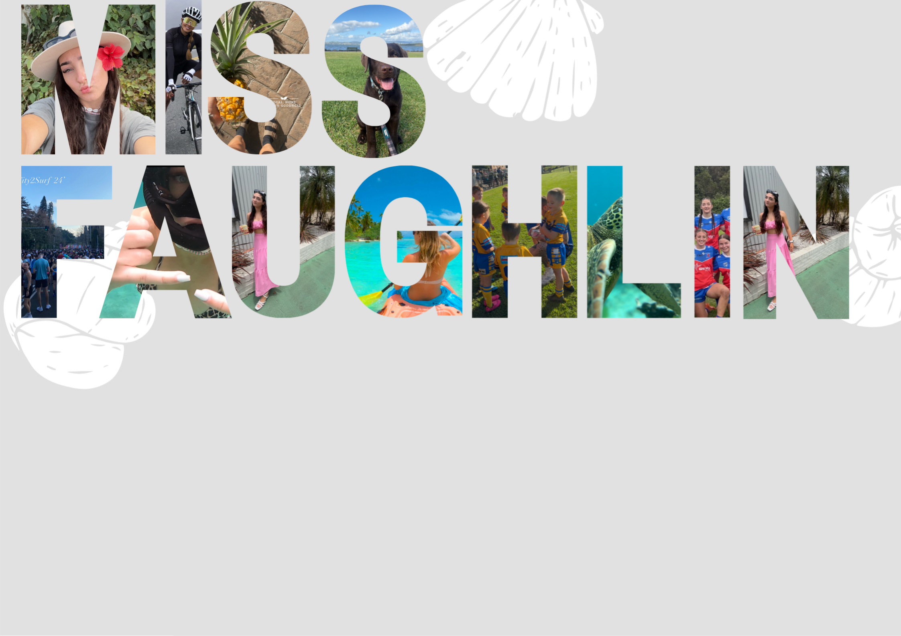
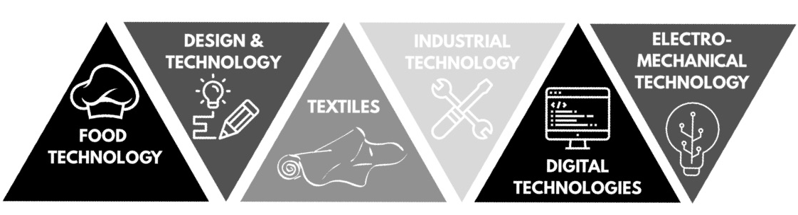

October 23, 2025
And Why Am I Becoming a Teacher?
Hi, my name is Ruby Faughlin
I am a third-year pre-service educator studying a Bachelor of Education (Secondary) / Bachelor of Arts (Design Innovation and Technologies) at the Australian Catholic University.
My teaching philosophy is grounded in inclusive, creative and hands-on learning, where students are encouraged to take ownership of their learning through meaningful, real-world connections and experiences.
Outside of the classroom, I am a passionate traveller. I also love sports and play rugby league which fuels my belief in teamwork and resilience, both on and of the field. At home, I share life with my cheeky Labrador puppy, Ryobi, who keeps me on my toes and reminds me to enjoy the little things.

My Journey So Far
I’ve successfully completed three teaching practicums—two in public schools and one in a Catholic school.
Each placement has helped shape my understanding of how different learning environments operate and reaffirmed the importance of adaptability, relationship-building and reflective practice in the classroom. These experiences have also deepened my confidence in lesson planning, classroom management, and differentiation to meet a diverse range of student needs.
I am currently majoring in Food Technology, an area I’m truly passionate about. I love learning and teaching about food, nutrition, and sustainability, and exploring how food connects to culture, health, and innovation.
Some of my most recent work includes the development of a Raspberry and Beetroot Protein Bar - designed to support active lifestyles, and a gourmet sausage range that celebrates the unique flavours of native Indigenous ingredients, including game meats such as crocodile and kangaroo and native herbs such as lemon myrtle, pepperberry and bush tomato. Projects like these reflect my commitment to using food education as a tool to spark curiosity, respect for culture and critical and creative thinking in students.


Donec eget ex magna. Interdum et malesuada fames ac ante ipsum primis in faucibus. Pellentesque venenatis dolor imperdiet dolor mattis sagittis magna etiam.

Donec eget ex magna. Interdum et malesuada fames ac ante ipsum primis in faucibus. Pellentesque venenatis dolor imperdiet dolor mattis sagittis magna etiam.

Donec eget ex magna. Interdum et malesuada fames ac ante ipsum primis in faucibus. Pellentesque venenatis dolor imperdiet dolor mattis sagittis magna etiam.

Donec eget ex magna. Interdum et malesuada fames ac ante ipsum primis in faucibus. Pellentesque venenatis dolor imperdiet dolor mattis sagittis magna etiam.

Donec eget ex magna. Interdum et malesuada fames ac ante ipsum primis in faucibus. Pellentesque venenatis dolor imperdiet dolor mattis sagittis magna etiam.

Donec eget ex magna. Interdum et malesuada fames ac ante ipsum primis in faucibus. Pellentesque venenatis dolor imperdiet dolor mattis sagittis magna etiam.